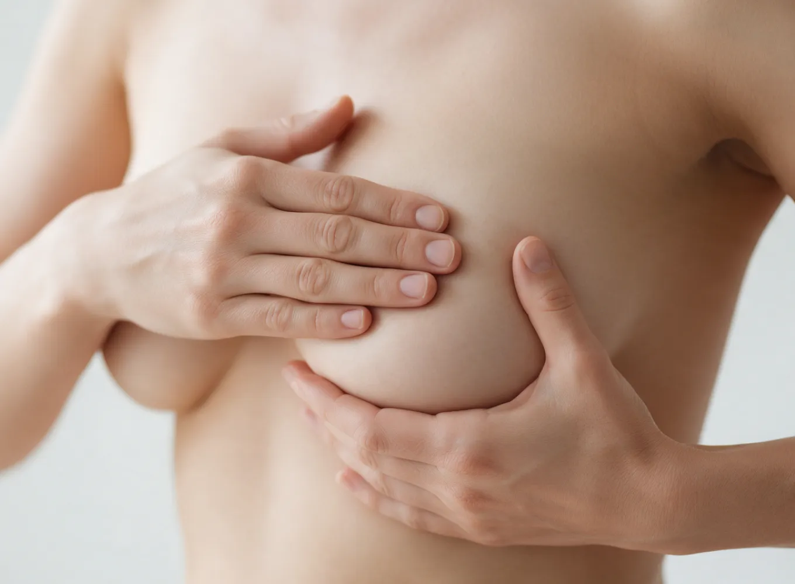
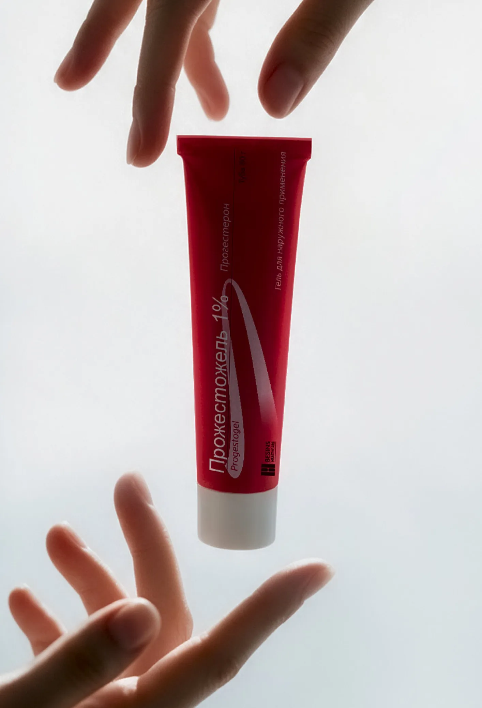
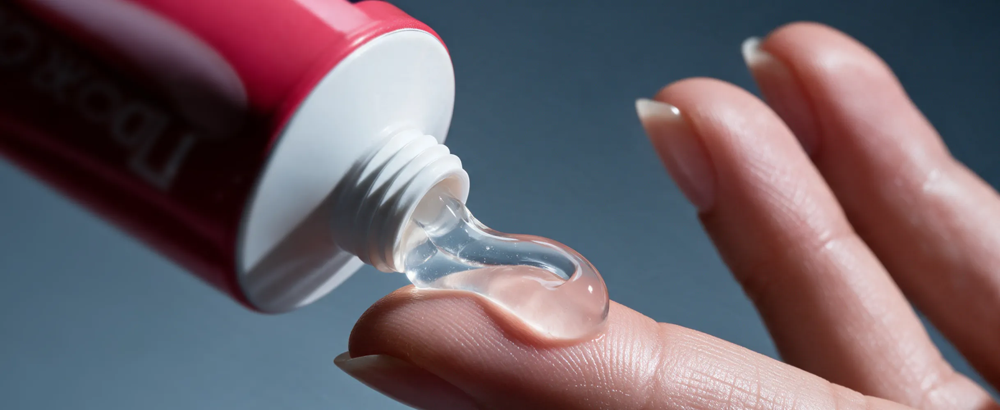

Как помочь пациентке с болью в молочной железе (МЖ)?
Масталгия или мастодиния
Согласно данным популяционных исследований и опросам, с этой проблемой сталкиваются до 70% женщин в возрасте до 55 лет (наиболее часто в период 30–50 лет)1,2.
- 45%
- женщин, характеризуют боли в молочных железах как слабые и считают их нормой2
- 25%
- женщин, характеризуют боли как интенсивные, длительностью более пяти дней2
Основные виды масталгии:
-
Циклическая масталгия как часть предменструального синдрома (ПМС)
-
Масталгия на фоне приёма комбинированных оральных контрацептивов (КОК)
-
Масталгия на фоне приёма менопаузальной гормональной терапии (МГТ)
-
Масталгия на фоне доброкачественной дисплазии молочной железы (ДДМЖ)
-
Экстрамаммарная боль
Ключевую роль в возникновении маммарной масталгии и ДДМЖ (мастопатии) играет недостаточность прогестерона3
Изменения в молочной железе на фоне системной гормональной терапии
- Масталгия6,7
- у 16% женщин, на фоне приёма эстрогенов
- у 32% женщин, на фоне приёма КОК
- Повышение плотности МЖ (по данным маммографии)8
- у 16% пациенток, на фоне приёма эстрогенов
- у 32% пациенток, на фоне терапии чистыми эстрогенами
- у 32% пациенток, на фоне приёма КОК

Терапия масталгии должна удовлетворять следующим требованиям:
-
Иметь быструю скорость снижения болевого синдрома
-
Являться патогенетически обоснованной
-
Обладать подтверждённой безопасностью применения
Важный аспект профилактики рака МЖ
Действительно, важно помнить о здоровье молочных желез, как в репродуктивном возрасте, так и во время переходного периода: контроль масталгии — один из важных аспектов профилактики рака молочной железы (РМЖ).
-
в 2,9–5,3 разаповышается риск развития РМЖ при отсутствии терапии циклической масталгии в течение трёх и более лет14
Также известно, что некоторые формы доброкачественной дисплазии молочных желез (ДДМЖ) являются самостоятельным фактором риска РМЖ15
Данные клинических исследований подтверждают эффективность и целесообразность использования препарата Прожестожель® в монотерапии ДДМЖ11, 13

По данным исследований у пациенток с ДДМЖ препарат Прожестожель® демонстрирует впечатляющую динамику снижения интенсивности масталгии по визуально-аналоговой шкале (ВАШ)11,13
-
Через 3 месяца терапии
достоверное уменьшение болевых ощущений более чем в 2 раза
-
Через 6 месяцев терапии
боль в молочных железах практически полностью регрессировала
Кроме того, Прожестожель® (по данным УЗИ и маммографии) обеспечивает долгосрочные эффекты по структурному улучшению состояния МЖ11,13
-
Уменьшение маммографической плотности
-
Регресс кист
-
Достоверная положительная динамика по шкале BI-RADS
Что совокупно влияет на уменьшение факторов риска развития РМЖ.
Исследования БРЕСТ-1 и БРЕСТ-2 подтвердили профиль безопасности препарата Прожестожель® при длительном применении (по показаниями — до 6 месяцев)11,13
Это, наряду с минимальным количеством побочных эффектов по сравнению с пероральными препаратами, позволяет рекомендовать его для продолжительной терапии.
